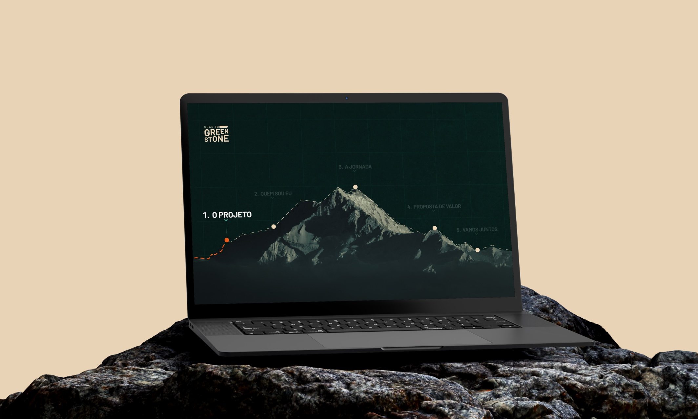

Apresentação para captar patrocinadores
Detalhes do Projeto
Road to Greenstone é uma jornada corporativa de bicicleta de quase 4 mil quilômetros pelo Canadá, criada para celebrar a inauguração de uma nova mina, promover bem-estar entre colaboradores e apoiar o Hospital de Geraldton. Para viabilizar o projeto, Fabrício precisava captar R$ 120 mil em cotas de patrocínio.
O desafio era criar uma carta proposta de patrocínio precisa equilibrar credibilidade e emoção. O material precisava justificar o investimento e ao mesmo tempo fazer o patrocinador querer fazer parte da história. O desafio visual era transformar uma logo com personalidade em um sistema gráfico coeso capaz de sustentar 27 slides.